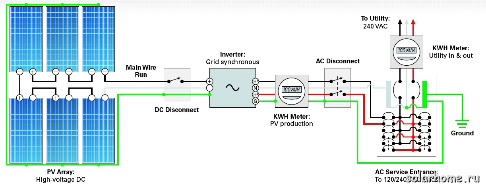
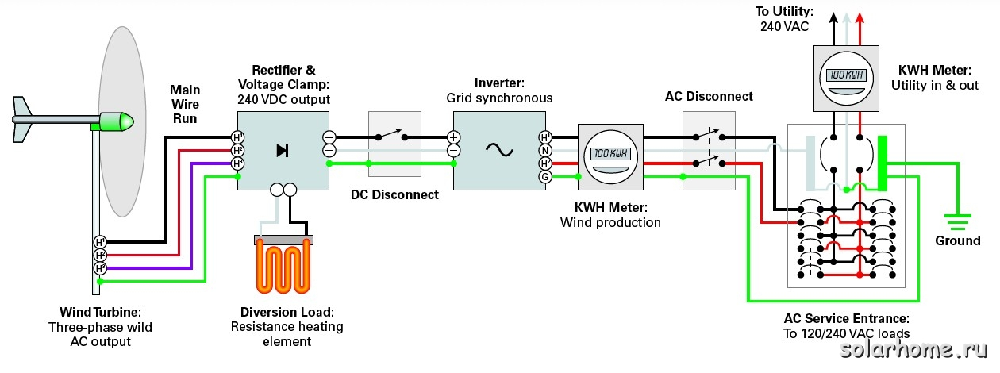

Зачем нужны аккумуляторы для автономных систем электроснабжения

Если Вы планируете систему электроснабжения с солнечными батареями, у вас есть выбор - сделать ее без аккумуляторов, или с аккумуляторами. Для правильного выбора необходимо ответить на следующие 3 вопроса:
- Как часто у меня бывают перерывы в электроснабжении?
- Как долго бывают типичные аварии в электросетях?
- Насколько аварии в сетях влияют на мою жизнь?
В большинстве мест, где сети новые, перерывы в электроснабжении бывают редко и ненадолго. Исключение составляют изношенные сети, сельские сети, а также удаленные районы с протяженными сетями. В этих случаях вероятность повреждения линий электропередач (ЛЭП) и аварий на линиях резко возрастает. Причинами могут быть как перегрузка оборудования, так и природные явления - бури, ураганы, ледяные дожди, мокрый снег и т.п. В удаленных местах сетям требуется больше времени, чтобы устранить неполадки. Более того, электросети обычно в первую очередь чинят неполадки на участках, которые питают много потребителей, а если ваш участок ЛЭП питает только несколько домов и они расположены достаточно далеко - вы можете ждать ремонта довольно долго.
Более важно учитывать длительность перерывов в электроснабжении, чем их частоту. При перерывах, скажем, менее 15 минут, обычно ничего страшного не происходит - вам только нужно иметь бесперебойник для своего компьютера, чтобы не потерять данные. Если же перерывы в электроснабжении растягиваются на полдня-день и более, то вам необходимо установить аккумуляторную систему бесперебойного электроснабжения, которая обеспечит вам энергию для системы отопления, насосов, освещение и других важных потребителей. Желательно иметь в составе такой системы и солнечные батареи или ветроустановку. Если же перерывы в электроснабжении превышают несколько дней, то вам обязательно нужен дополнительный источник энергии - солнечные батареи и/или ветрогенератор,- а также резервный жидкотопливный генератор.
Конечно, очень важно, как сильно влияют перерывы в электроснабжении на ваш стиль жизни. Если сеть пропадает несколько раз в год на несколько минут и переустановить часы не является для вас большой проблемой - то безаккумуляторная система солнечного электроснабжения - как раз то, что вам нужно. Более того, некоторые люди рассматривают нечастые перерывы в электроснабжении как развлечение - можно устроить раз-два в году ужин при свечах вместо того, чтобы в течение всего года заботиться о состоянии аккумуляторной батареи.
С точки зрения производительности, безаккумуляторная система производит больше электроэнергии, чем аккумуляторная. Во-первых, часть энергии будет теряться на заряд-разряд аккумулятора (до 20%), часть энергии теряется в менее эффективных батарейных инверторах и контроллерах заряда. См. более подробно здесь. Однако, вследствие того, что в солнечных аккумуляторных соединенных с сетью системах аккумуляторы редко сильно разряжаются, то выигрыш по сравнению с аккумуляторными системами может быть не более, чем 5-10%. А вот ветряные соединенные с сетью системы могут значительно превосходить в выработке батарейные ситемы - см. ниже.
Если безаккумуляторная система - это то, что вам нужно, то следующий вопрос - какой источник энергии использовать - солнце, ветер или текущую воду?
Солнечные фотоэлектрические системы, соединенные с сетьюПо сравнению с батарейными соединенными с сетью системами, безаккумуляторная система может быть дешевле на 20-40% за счет отсутствия аккумуляторов и связанных с ними частей системы. Кроме существенных капитальных вложений при установке батарейной системы, нужно менять аккумуляторы каждые 7-8 лет. Это еще более снижает привлекательность соединенных с сетью батарейных систем. Более того, очень трудно предсказать стоимость АКБ через 7-8 лет, т.к. стоимость свинца за последние несколько лет возросла в 3 раза (после ее падения во время кризиса 2008 года цена постоянно растет и сейчас она превысила предкризисный уровень).

Типичная схема безаккумуляторной соединенной с сетью фотоэлектрической системы
Безаккумуляторные сетевые системы обычно рассчитаны на высокое напряжение. Это существенно снижает требования к сечению проводов и, соответственно, уменьшает их цену. Можно повысить эффективность батарейных систем за счет применения MPPT контроллеров, а также запрета на подзаряд аккумуляторов в ночное время (без этой функции АБ будут заряжаться ночью от сети). Другой вариант - использовать сетевые инверторы вместо контроллеров заряда совместно со специальными батарейными инверторами, которые могут заряжать АБ с выхода (Steca Xtender, SMA, RE - см. раздел Инверторы для более подробной информации об этих инверторах).
Системы соединенные с сетью с аккумуляторамиБольшинство аккумуляторных соединенных с сетью систем имеют в своем составе относительно маленькие аккумуляторы. При определении необходимой емкости АКБ здесь нужно ориентироваться только на потребности в энергии во время перерыва в электроснабжении - а они могут быть небольшие, так как во время аварий на ЛЭП можно существенно снизить энергопотребление в доме. В соединенных с сетью системах можно использовать более дешевые AGM аккумуляторы. Герметичные АКБ не требуют обслуживания, что тоже может снизить стоимость эксплуатации вашей резервно-сетевой солнечной системы.
Существуют 2 основных способа построения резервно-сетевой фотоэлектрической системы.
- С использованием контроллеров заряда постоянного тока и батарейных инверторов, которые могут направлять излишки солнечного электричества в сеть, если аккумуляторы полностью заряжены. К таким инверторам относятся последние модели инверторов Outback (с буквой G в названии - grid-interactive), инверторы Xantrex XW, SMA, Steca Xtender.
- С использованием сетевых фотоэлектрических инверторов и специальных батарейных инверторов, которые могут не только направлять излишки энергии от АБ в сеть, но и заряжать АБ с выхода инвертора. Т.е. сетевой инвертор присоединяется к выходу (а не ко входу) батарейного инвертора. Это позволяет существенно снизить потери в системе и повысить выработку энергии. Более подробно - см. на страничке Автономные и резервные системы электроснабжения с соединением на стороне переменного тока
Во втором случае резервная система может быть преобразована из сетевой безаккумуляторной системы. Т.е. есть возможность сначала установить сетевые инверторы и солнечные батареи, а затем, в случае необходимости обеспечивать резервное электропитание, добавить батарейный инвертор с аккумуляторами. При этом не понадобится менять проводку и перекоммутировать солнечные батареи.
При пропадании напряжения в сети, оба инвертора отключаются от сети. Если АБ полностью заряжены, такой специальный батарейный инвертор отключает сетевой фотоэлектрический инвертор для защиты АБ от перезаряда. Также, вместо этого возможно использовать дополнительные контакты инвертора для включения дополнительной нагрузки (например, нагревателей и т.п.), чтобы не терять ни одного кВт*ч от ваших солнечных батарей.
Ветроэлектрические системы, соединенные с сетьюСоединенные с сетью ветроэлектрические установки - это наиболее быстро развивающийся сегмент рынка малых ветроустановок. Теперь ветроустановки могут использоваться не только в автономных системах, но и в обычных, соединенных с сетью, домах.
Те же самые аргументы по необходимости использования аккумуляторов в системе, которые были приведены для солнечных систем, можно отнести и к ветроэлектрическим системам. Большинство ветротурбин, рассчитанных на работу параллельно с сетью, имеют выходное напряжение гораздо выше, чем у ветротурбин, рассчитанных на работу с аккумуляторами - это обычно более 200В против 12-48В. Такое высокое напряжение также позволяет уменьшить сечение соединительных проводов и уменьшить их стоимость.
Вследствие большей неравномерности выработки энергии у ветрогенераторов по сравнению с фотоэлектрическими модулями, соединенных с сетью ветрогенераторы могут выработать гораздо больше энергии, чем соединенные с аккумуляторами. Также, большинство соединенных с сетью ветрогенераторов используют инверторы со слежением за точкой максимальной мощности, что может повысить выработку ветроустановки на 20-50%!
Есть несколько типов инверторов для соединенных с сетью ветроустановок. Наиболее известные - SMA Windy Boy, которые являются модификацией успешного фотоэлектрического инвертора Sunny Boy. Эти модификации позволили успевать отслеживать резкие колебания в выработке энергии, присущие ветроустановкам.
Windy Boy требует применения дополнительного устройства между ветротурбиной и инвертором, которое защищает его от перенапряжений. Обычно это устройство с выпрямителем и контроллером балластной нагрузки, которые направляет излишки энергии на нагреватель. Вероятность перенапряжения может возникнуть если ветер сильный, а сеть пропала и не может принять излишки энергии. Также, контроллер необходим для запуска ветрогенератора, когда инвертор еще не включен на генерацию в сеть и до достижения устойчивой выработки используется ШИМ для поддержания напряжения в пределах допустимого. Некоторые турбины используют механические регуляторы для поддержания напряжения в пределах допустимого (например, Proven).

Типичная схема безаккумуляторной соединенной с сетью ветроэлектрической системы